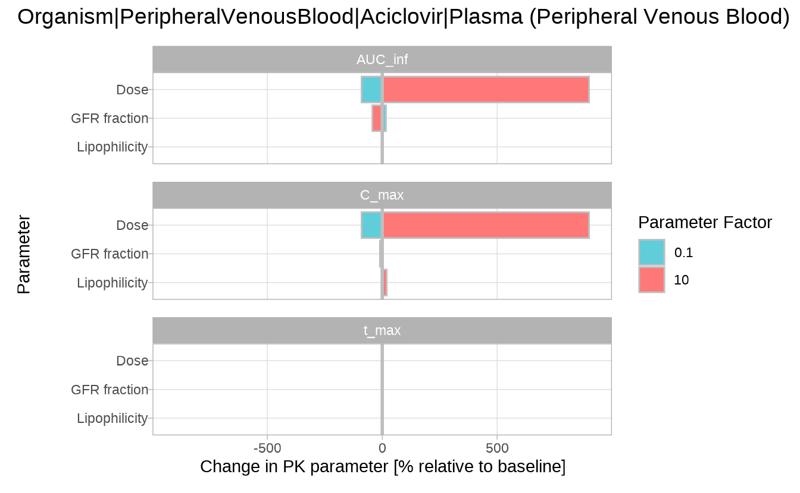

Overview
Sensitivity analysis helps to understand how variations in key simulation parameters affect pharmacokinetic (PK) outcomes. It is a critical step in evaluating model robustness, particularly when parameter values are uncertain. For details on sensitivity analysis and its mathematical background, see the OSPS documentation on Sensitivity Analysis.
This vignette demonstrates a complete sensitivity analysis workflow in esqlabsR using aciclovir as an example. We run a base simulation, define and vary selected parameters, calculate sensitivities, and visualize the impact on PK metrics.
Running the sensitivity analysis
We begin by loading a simulation of aciclovir from the package example data:
library(esqlabsR)
simulationFilePath <- system.file(
"extdata/examples/TestProject/Models/Simulations/Aciclovir.pkml",
package = "esqlabsR"
)
simulation <- loadSimulation(simulationFilePath)The sensitivityCalculation() function in
esqlabsR automates the analysis process by re-running the
simulation with scaled input parameters. By default, each parameter is
varied from 0.1× to 10× its original value, which can be customized
using the variationRange argument.
The function returns a structured list containing the varied parameters, simulation results, and a data frame of calculated PK metrics for each variation.
In the following example, we analyze how changes in lipophilicity, dose, and glomerular filtration rate (GFR fraction) affect the pharmacokinetics of aciclovir:
outputPaths <- c(
Aciclovir_PVB = "Organism|PeripheralVenousBlood|Aciclovir|Plasma (Peripheral Venous Blood)"
)
parameterPaths <- c(
"Lipophilicity" = "Aciclovir|Lipophilicity",
"Dose" = "Applications|IV 250mg 10min|Application_1|ProtocolSchemaItem|Dose",
"GFR fraction" = "Neighborhoods|Kidney_pls_Kidney_ur|Aciclovir|Glomerular Filtration-GFR|GFR fraction"
)
analysis <- sensitivityCalculation(simulation, outputPaths, parameterPaths)
head(analysis$pkData)
#> # A tibble: 6 × 11
#> OutputPath ParameterPath ParameterFactor ParameterValue ParameterUnit
#> <chr> <chr> <dbl> <dbl> <chr>
#> 1 Organism|Periphera… Aciclovir|Li… 0.1 -0.0097 Log Units
#> 2 Organism|Periphera… Aciclovir|Li… 0.2 -0.0194 Log Units
#> 3 Organism|Periphera… Aciclovir|Li… 0.3 -0.0291 Log Units
#> 4 Organism|Periphera… Aciclovir|Li… 0.4 -0.0388 Log Units
#> 5 Organism|Periphera… Aciclovir|Li… 0.5 -0.0485 Log Units
#> 6 Organism|Periphera… Aciclovir|Li… 0.6 -0.0582 Log Units
#> # ℹ 6 more variables: ParameterPathUserName <chr>, PKParameter <chr>,
#> # PKParameterValue <dbl>, PKPercentChange <dbl>, Unit <chr>,
#> # SensitivityPKParameter <dbl>To illustrate interpretation we will focus on lipophilicity only.
analysis$pkData |>
dplyr::filter(
ParameterPath == "Aciclovir|Lipophilicity",
PKParameter == "AUC_inf",
ParameterFactor %in% c(0.1, 1, 10)
) |>
dplyr::select(
ParameterFactor, PKParameterValue,
PKPercentChange, SensitivityPKParameter
) |>
dplyr::mutate(
PKPercentChange = round(PKPercentChange, 2),
SensitivityPKParameter = round(SensitivityPKParameter, 4)
)
#> # A tibble: 3 × 4
#> ParameterFactor PKParameterValue PKPercentChange SensitivityPKParameter
#> <dbl> <dbl> <dbl> <dbl>
#> 1 0.1 4055. -0.44 0.0049
#> 2 1 4073. 0 NaN
#> 3 10 4160. 2.13 0.0024In our example the default lipophilicity (−0.097 log units) yields an AUC of 4072.6 µmol·min/L. Ten-fold higher (−0.0097) reduces AUC by 0.44 %, whereas ten-fold lower (−0.97) increases it by 2.13 %. The sensitivity of AUC to a 10-fold increase in lipophilicity is calculated as:
Saving and Loading Sensitivity Results
The results of a sensitivity analysis can be saved using
saveSensitivityCalculation() and restored with
loadSensitivityCalculation(). The simulation
argument in loadSensitivityCalculation() is optional. If
the original Simulation object is provided, reloading from
disk is avoided. Otherwise, the function attempts to load the
.pkml file from the path recorded during the original
analysis, which must still be accessible.
# Save to disk
outputDir <- file.path(tempdir(), "sensitivity-results")
saveSensitivityCalculation(analysis, outputDir)
# Reload from disk
analysis <- loadSensitivityCalculation(outputDir, simulation)Visualizing Sensitivity Results
The results of the sensitivity analysis can be visualized using the following functions:
Sensitivity Spider Plot
sensitivitySpiderPlot() visualizes how PK parameters
respond as model input parameters are scaled. Each panel represents one
PK metric (default: C_max, t_max,
AUC_inf), making it easy to identify nonlinear trends and
compare the direction and magnitude of effects.
By default, the plot includes all PK parameters in
analysis$pkData. To restrict the output, use the
pkParameters argument.
sensitivitySpiderPlot(analysis)
#> $`Organism|PeripheralVenousBlood|Aciclovir|Plasma (Peripheral Venous Blood)`
In this example, Dose shows a strong and nonlinear effect on
both C_max and AUC_inf, while
t_max remains relatively stable. GFR fraction and
lipophilicity have more modest but still visible effects.
Sensitivity time profiles
The sensitivityTimeProfiles() function displays full
concentration–time curves for each input parameter variation. This plot
is ideal for understanding how parameter changes affect the shape and
timing of the drug profile, rather than summary PK metrics.
Each panel corresponds to one input parameter, with a color gradient representing the scaling factor: 0.1 = blue, 1.0 = black, 10 = red.
sensitivityTimeProfiles(analysis)
#> $`Organism|PeripheralVenousBlood|Aciclovir|Plasma (Peripheral Venous Blood)`
Here, increasing the Dose uniformly raises the profile, while changes in GFR fraction affect the rate of decline, indicating faster or slower elimination. Lipophilicity causes only minor shifts in the curve.
Sensitivity tornado plot
The sensitivityTornadoPlot() function provides a
compact, side-by-side comparison of how each input parameter influences
different PK outputs at a fixed scaling factor. The plot is best used to
rank parameters by influence and identify those with
the strongest impact.
By default, the plot compares the results at 0.1× and 10× the
original parameter value. Other scaling factors can also be used, but
they must be included in the variationRange passed to
sensitivityCalculation().
sensitivityTornadoPlot(analysis)
#> $`Organism|PeripheralVenousBlood|Aciclovir|Plasma (Peripheral Venous Blood)`
The tornado plot confirms the trends seen in previous plots, but makes it easier to compare the relative impact of each parameter across PK metrics.
Sensitivity calculation for user-defined (non-PK parameters) outputs
Though the typical workflows for sensitivity analysis are focused on
PK parameters, it is also possible to calculate the sensitivities for
any numerical model outputs using user-defined functions. As for the PK
parameters, the provided function(s) will be applied to each output
defined in the argument outputPaths of the
sensitivityCalculation() function.
The custom functions are provided as a named list of functions in the
customOutputFunctions argument. Each function must have the
arguments x and y, through which it accesses
the simulated time values (x) or the output values
(y). The function should return a single numeric value.
In the following example, we calculate the sensitivity of the average concentration of aciclovir in the peripheral venous blood to the lipophilicity of aciclovir.
We first define a function that calculates the mean of a given numerical vector:
meanFunction <- function(x, y) {
mean(y)
}Next, we run the sensitivity analysis for the average concentration of aciclovir in the peripheral venous blood:
To define custom labels for the parameters in the resulting plots,
you can pass a named vector to the parameterPaths
argument, where the names will be used as labels instead of full
paths.
simulation <- loadSimulation(simulationFilePath)
customOutputPaths <- c(
Aciclovir_PVB = "Organism|PeripheralVenousBlood|Aciclovir|Plasma (Peripheral Venous Blood)"
)
customParameterPaths <- c("Lipophilicity" = "Aciclovir|Lipophilicity")
customAnalysis <- sensitivityCalculation(
simulation,
customOutputPaths,
pkParameters = c("C_max"),
parameterPaths = customParameterPaths,
customOutputFunctions = list(AverageConcentration = meanFunction)
)
head(customAnalysis$pkData)
#> # A tibble: 6 × 11
#> OutputPath ParameterPath ParameterFactor ParameterValue ParameterUnit
#> <chr> <chr> <dbl> <dbl> <chr>
#> 1 Organism|Periphera… Aciclovir|Li… 0.1 -0.0097 Log Units
#> 2 Organism|Periphera… Aciclovir|Li… 0.2 -0.0194 Log Units
#> 3 Organism|Periphera… Aciclovir|Li… 0.3 -0.0291 Log Units
#> 4 Organism|Periphera… Aciclovir|Li… 0.4 -0.0388 Log Units
#> 5 Organism|Periphera… Aciclovir|Li… 0.5 -0.0485 Log Units
#> 6 Organism|Periphera… Aciclovir|Li… 0.6 -0.0582 Log Units
#> # ℹ 6 more variables: ParameterPathUserName <chr>, PKParameter <chr>,
#> # PKParameterValue <dbl>, PKPercentChange <dbl>, Unit <chr>,
#> # SensitivityPKParameter <dbl>Note: If we want to calculate the sensitivity
of the custom function only without the default PK-parameters, we need
to set the pkParameters value to an empty list.
Finally, we plot the sensitivity of the average concentration of aciclovir in the peripheral venous blood to the lipophilicity of aciclovir.
sensitivitySpiderPlot(customAnalysis)
#> $`Organism|PeripheralVenousBlood|Aciclovir|Plasma (Peripheral Venous Blood)`